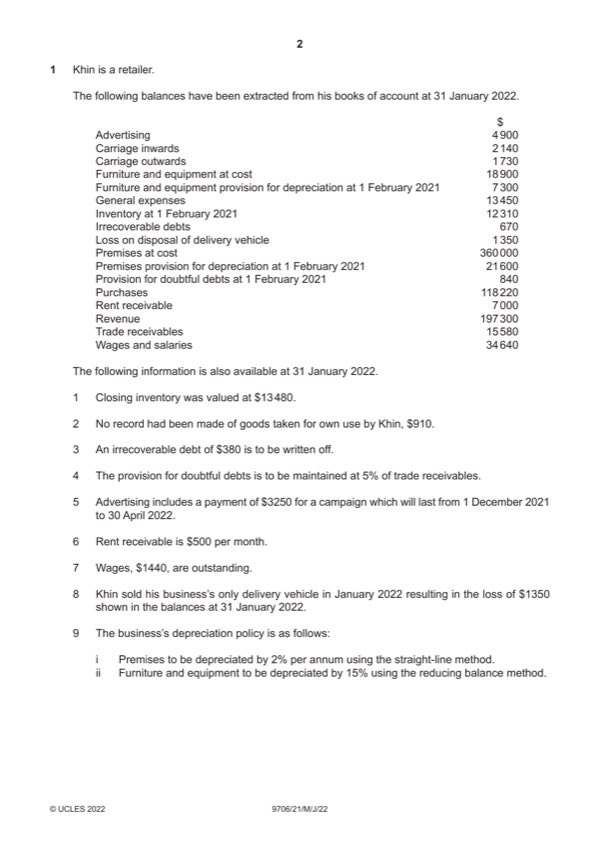

Question 1

Original paper page 2
Part 1(a) — solution
Answer: 131 760
Khin 15
Income statement for the year ended 31 January 2022
$ $
Revenue 197 300
Less: cost of sales
Opening inventory 12 310
Purchases (less goods own use $910) 117 310 (1)
Carriage inwards 2 140 (1)
131 760
Closing inventory (13 480)
(118 280) (1)OF
Gross profit 79 020 (1)OF
Add income
Decrease in provision for doubtful debts W1 80 (1)
Rent received W2 6 000 (1)
Mark points
- Correct result: 131 760
Part 1(a) — solution
- W1 Decrease in provision for doubtful debts: $840 – [5% ($15 580 – $380) i.e. $760] = $80 (1)
- W2 Rent received: $500 12 = $6000 (1)
- W3 Advertising: $4900 – (3/5 $3250, i.e. $1950) = $2950 (1)
Mark points
- W1 Decrease in provision for doubtful debts: $840 – [5% ($15 580 – $380) i.e. $760] = $80 (1)
- W2 Rent received: $500 12 = $6000 (1)
- W3 Advertising: $4900 – (3/5 $3250, i.e. $1950) = $2950 (1)
Part 1(b) — solution
Rent receivable account 2
$ $
Income statement 6 000 (1) Bank 7 000
Balance c/d 1 000
Mark points
- Include the ideas shown in the solution above.
Part 1(c) — solution
Journal 2
Dr Cr
$ $
Provision for doubtful debts 80 (1)OF
Income statement 80 (1)OF
Mark points
- Include the ideas shown in the solution above.
Part 1(d) — solution
To apply the matching concept so that profits are based on matching costs and revenues for an accounting period (1) 2
irrespective of actual receipts and payments (1).
Accept other valid responses.
Mark points
- Include the ideas shown in the solution above.
Part 1(e)(i) — solution
Straightforward to apply/calculate/understand (1) 1
May correspond to actual usage of non-current asset (1)
Max 1
Accept other valid responses.
2022 Page 8 of 14
9706/21 Cambridge International AS & A Level – Mark Scheme May/June 2022
Mark points
- Include the ideas shown in the solution above.
Part 1(e)(ii) — solution
Produces an even annual charge when repairs and maintenance are taken into account (1) 1
May correspond to actual usage of non-current assets (1)
Max. 1
Accept other valid responses.
Mark points
- Include the ideas shown in the solution above.
Part 1(f) — solution
Option 1 (Max. 3) 7
Will reduce costs and increase profits (1)
May reduce demand if advertising has been successful (1)
Reducing selling price may stimulate demand and therefore increase turnover and profits (1)
Profits will be reduced if demand is unaffected (1)
Option 2 (Max. 3)
Will increase profits as costs are reduced (1)
May reduce demand and profits if goods are of poorer quality (1)
Will cheaper suppliers offer same credit terms/trade discounts/free carriage (1)
Will new suppliers prove to be reliable (1)
Advice (1)
Accept other valid responses.
Mark points
- Include the ideas shown in the solution above.
Part 1 — solution
Jan–30 Sept 1 Oct–31 Dec
$ $
Profit before interest 61 875 (1) both 20 625
Less interest on Rio’s loan
at 5% per annum/8% per annum (225) (1) (120) (1)
Profits for appropriation 61 650 20 505
Appropriations final 3 months:
Interest on capitals
Maria: 6% x ¼ x $52 000 (780)
Rio: 6% x ¼ x $38 000 (570) (1)
Sarah: 6% x ¼ x $45 000 (675)
Salary for Rio: ¼ x $15 000 (3 750) (1)
Divisible profit 14 730
Shares of remaining profits
Maria 30 825 (1)OF (5 892)(1)OF
Rio 30 825 (2 946)
Sarah (5 892)
Mark points
- Include the ideas shown in the solution above.